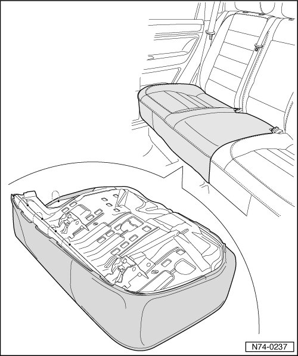
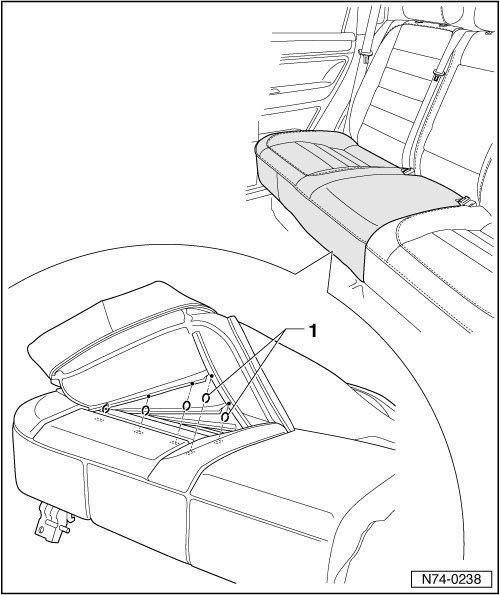
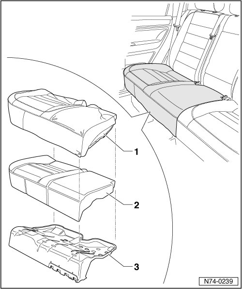
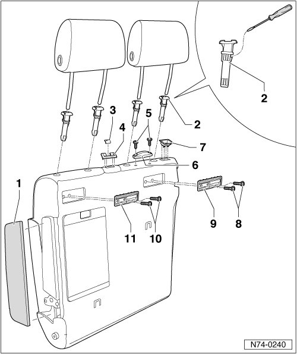
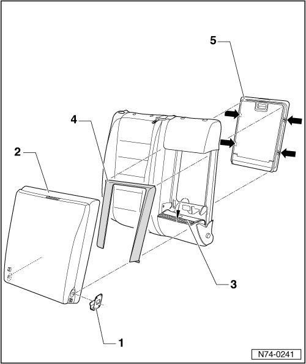
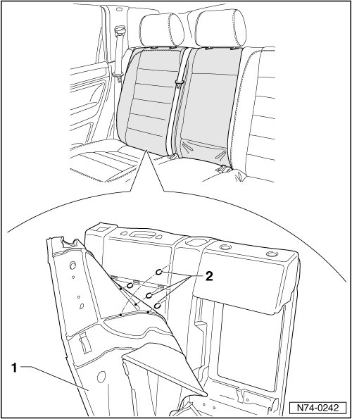
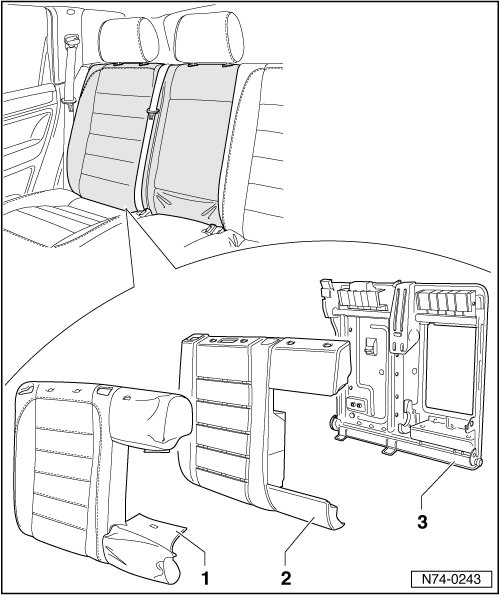
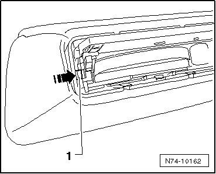
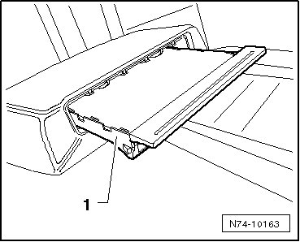

Rear Seat Cushion and Upholstery
Rear Seat Cushion and Upholstery
--> [ Bench Seat Cushion and Upholstery ]
--> [ Seat Backrest Cushion and Upholstery ]
--> [ Center Armrest Cupholder ]
Bench Seat Cushion and Upholstery
• Removal and installation of components is described for the right-hand seat cushion. Removal and installation of the left-hand seat cushion components is performed in the same manner.
Removing
- Remove the bench seat (through calendar week 47.06):
• Right --> [ Right Bench Seat, through November 2006 ] Rear Seats
• Left --> [ Left Bench Seat, through November 2006 ] Rear Seats
- Remove the bench seat (from calendar week 48.06) --> [ Bench Seat, from December 2006 ] Rear Seats
• The description is for vehicles that were produced through November 2006. For vehicles that were produced from December 2006, the work is done similarly.
- Release the profile from the mountings all around.

- Cut through the upholstery clips - 1 - (Qty. 25) with cutting pliers.
• On vehicles with "W 12" engine, cover is not secured with upholstery clips but rather with Velcro straps on the upholstery. When removing cover, they should be removed from the upholstery carefully to avoid ripping the cover.
• When installing the cover, use upholstery pliers (V.A.G 1634) to the install upholstery clips.

- Remove the cover - 1 - and upholstery - 2 - from the seat frame - 3 -.

Installing
- Perform the steps used for removal in reverse order.
Seat Backrest Cushion and Upholstery
• Removal and installation of components is described for the right-hand rear backrest. Removal and installation of the left-hand rear backrest components is performed in the same manner.
Removing
- Remove backrest:
• Left --> [ Left Seat Backrest ] Rear Seats
• Right --> [ Right Seat Backrest ] Rear Seats
- Pull the headrests out of the seat backrest.
- Remove trim - 1 - near center armrest.
- Press down padding in vicinity of headrest guide - 2 - and operate locking mechanism on side using small screwdriver.
- Pull out headrest guides upward.
- Disassemble remaining headrest guides as described.
- Remove seat belt opening trim - 3 - and - 4 - from backrest.
- Remove 2 bolts - 5 - and remove backrest support - 6 -.
- Pull backrest release trim - 7 - out of backrest.
- Remove 2 bolts - 8 - and remove right mounting - 9 -.
- Remove 2 bolts - 10 - and remove left mounting - 11 -.

- Remove clip - 1 - and remove center armrest - 2 - from mountings in backrest.
- Fold flap from cover - 3 - forward and detach frame - 4 - from mountings.
- Press in the latches - arrows - and remove the ski sack - 5 -.

- Detach profile - 1 - from mountings.
- Cut through upholstery clips - 2 - using suitable pliers.
• On vehicles with "W 12" engine, cover is not secured with upholstery clips but rather with Velcro(R) straps on the upholstery. When removing cover, they should be removed from the upholstery carefully to avoid ripping the cover.
• When installing the cover, use upholstery pliers (V.A.G 1634) to the install upholstery clips.

- Remove cover - 1 - and padding - 2 - from backrest frame - 3 -.

Installing
- Perform the steps used for removal in reverse order.
Center Armrest Cupholder
Removing
- Fold center armrest forward.
- Open cupholder and press clips- 1 - on both sides inward with a small screwdriver - arrow -.

- Remove cupholder - 1 - from center armrest in direction of travel.

Installing
- Perform the steps used for removal in reverse order.